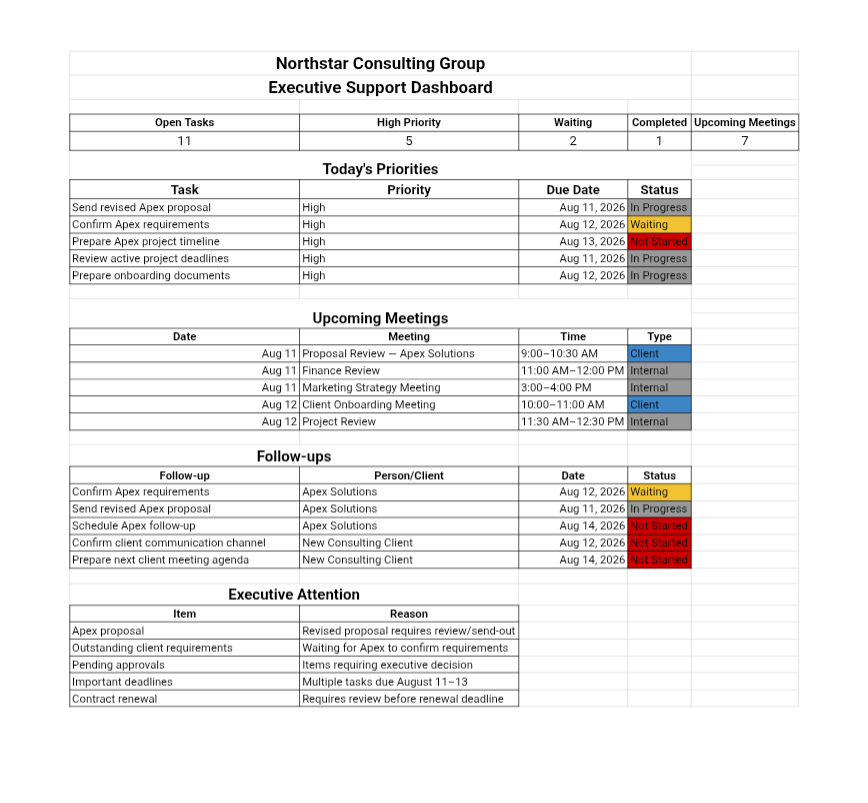

Executive & Administrative Support
Executive Support System
A structured executive support workflow covering inbox organization, calendar management, meetings, documents, task tracking, follow-ups and executive reporting.

Overview
This project is an independent portfolio demonstration created to demonstrate practical business workflows. It presents a structured executive support system that organizes the day-to-day administrative work behind an executive role, inbox, calendar, meetings, documents, tasks and reporting.
Business Scenario
A typical executive workload involves a constant flow of emails, calendar commitments, meetings, documents and follow-ups. Without a clear structure, important tasks can slip and information becomes scattered. This demonstration shows how a practical support system can bring order to that workload.
Objective
To build a clear, repeatable executive support workflow that keeps inbox, calendar, meetings, documents and tasks organized, so that nothing important is missed and progress is visible at a glance.
What Was Built
A set of structured documents and tracking sheets covering the core areas of executive support: an inbox organization system, a calendar management view, a meeting coordination log, a document organization structure, a task tracker and a follow-up and reporting template.
Workflow / Process
The workflow follows a clear sequence: incoming requests are triaged and organized in the inbox, calendar commitments are scheduled and aligned with priorities, meetings are coordinated with agendas and notes, documents are stored in a structured folder system, tasks are tracked from assignment to completion, and follow-ups are logged for accountability.
Weekly executive reporting summarizes open items, completed tasks and upcoming priorities in a single view.
Tools Used
Google Sheets for tracking and reporting, Google Docs for meeting notes and documentation, and Google Drive for organized file storage.
Skills Demonstrated
Key Takeaways
- A structured inbox and calendar system reduces missed commitments and duplicated effort.
- Meeting coordination improves when agendas, notes and follow-ups live in one place.
- Task tracking with clear ownership makes progress visible and accountable.
- Weekly reporting creates a simple, repeatable rhythm for executive support.